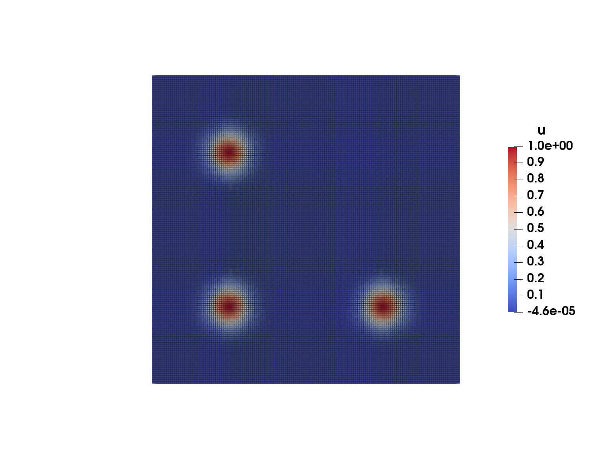
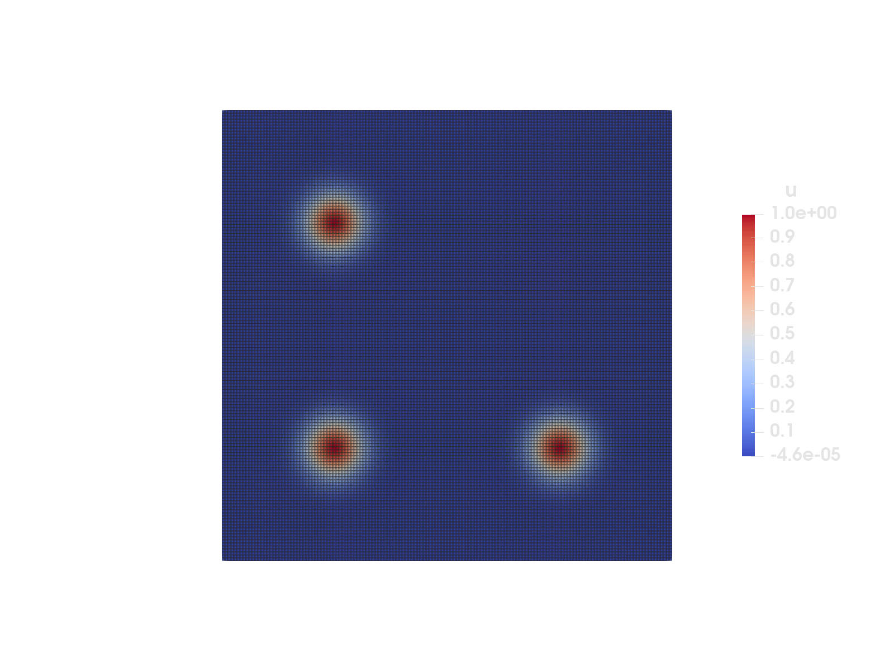

Helmholtz equation
In this example, we want to solve a (variant of) the Helmholtz equation. The example is inspired by deal.II step-7 on the standard square.
\[ - \Delta u + u = f\]
With boundary conditions given by
\[u = g_1 \quad x \in \Gamma_1\]
and
\[n \cdot \nabla u = g_2 \quad x \in \Gamma_2\]
Here Γ₁ is the union of the top and the right boundary of the square, while Γ₂ is the union of the bottom and the left boundary.


We will use the following weak formulation:
\[\int_\Omega \nabla δu \cdot \nabla u \, d\Omega + \int_\Omega δu \cdot u \, d\Omega - \int_\Omega δu \cdot f \, d\Omega - \int_{\Gamma_2} δu g_2 \, d\Gamma = 0 \quad \forall δu\]
where $δu$ is a suitable test function that satisfies:
\[δu = 0 \quad x \in \Gamma_1\]
and $u$ is a suitable function that satisfies:
\[u = g_1 \quad x \in \Gamma_1\]
The example highlights the following interesting features:
- There are two kinds of boundary conditions, "Dirichlet" and "Von Neumann"
- The example contains boundary integrals
- The Dirichlet condition is imposed strongly and the Von Neumann condition is imposed weakly.
using Ferriteusing Tensorsusing SparseArraysusing LinearAlgebragrid = generate_grid(Quadrilateral, (150, 150))ip = Lagrange{RefQuadrilateral, 1}()qr = QuadratureRule{RefQuadrilateral}(2)qr_facet = FacetQuadratureRule{RefQuadrilateral}(2)cellvalues = CellValues(qr, ip);facetvalues = FacetValues(qr_facet, ip);dh = DofHandler(grid)add!(dh, :u, ip)close!(dh)DofHandler{2, Grid{2, Quadrilateral, Float64}}
Fields:
:u, Lagrange{RefQuadrilateral, 1}()
Dofs per cell: 4
Total dofs: 22801We will set things up, so that a known analytic solution is approximately reproduced. This is a good testing strategy for PDE codes and known as the method of manufactured solutions.
function u_ana(x::Vec{2, T}) where {T} xs = ( Vec{2}((-0.5, 0.5)), Vec{2}((-0.5, -0.5)), Vec{2}((0.5, -0.5)), ) σ = 1 / 8 s = zero(eltype(x)) for i in 1:3 s += exp(- norm(x - xs[i])^2 / σ^2) end return max(1.0e-15 * one(T), s) # Denormals, be goneend;dbcs = ConstraintHandler(dh)ConstraintHandler:
Not closed!The (strong) Dirichlet boundary condition can be handled automatically by the Ferrite library.
dbc = Dirichlet(:u, union(getfacetset(grid, "top"), getfacetset(grid, "right")), (x, t) -> u_ana(x))add!(dbcs, dbc)close!(dbcs)update!(dbcs, 0.0)K = allocate_matrix(dh);function doassemble( cellvalues::CellValues, facetvalues::FacetValues, K::SparseMatrixCSC, dh::DofHandler ) b = 1.0 f = zeros(ndofs(dh)) assembler = start_assemble(K, f) n_basefuncs = getnbasefunctions(cellvalues) fe = zeros(n_basefuncs) # Local force vector Ke = zeros(n_basefuncs, n_basefuncs) # Local stiffness matrix for cell in CellIterator(dh) fill!(Ke, 0) fill!(fe, 0) coords = getcoordinates(cell) reinit!(cellvalues, cell)First we derive the non boundary part of the variation problem from the destined solution u_ana
\[\int_\Omega \nabla δu \cdot \nabla u \, d\Omega + \int_\Omega δu \cdot u \, d\Omega - \int_\Omega δu \cdot f \, d\Omega\]
for q_point in 1:getnquadpoints(cellvalues) dΩ = getdetJdV(cellvalues, q_point) coords_qp = spatial_coordinate(cellvalues, q_point, coords) f_true = -LinearAlgebra.tr(hessian(u_ana, coords_qp)) + u_ana(coords_qp) for i in 1:n_basefuncs δu = shape_value(cellvalues, q_point, i) ∇δu = shape_gradient(cellvalues, q_point, i) fe[i] += (δu * f_true) * dΩ for j in 1:n_basefuncs u = shape_value(cellvalues, q_point, j) ∇u = shape_gradient(cellvalues, q_point, j) Ke[i, j] += (∇δu ⋅ ∇u + δu * u) * dΩ end end endNow we manually add the von Neumann boundary terms
\[\int_{\Gamma_2} δu g_2 \, d\Gamma\]
for facet in 1:nfacets(cell) if (cellid(cell), facet) ∈ getfacetset(grid, "left") || (cellid(cell), facet) ∈ getfacetset(grid, "bottom") reinit!(facetvalues, cell, facet) for q_point in 1:getnquadpoints(facetvalues) coords_qp = spatial_coordinate(facetvalues, q_point, coords) n = getnormal(facetvalues, q_point) g_2 = gradient(u_ana, coords_qp) ⋅ n dΓ = getdetJdV(facetvalues, q_point) for i in 1:n_basefuncs δu = shape_value(facetvalues, q_point, i) fe[i] += (δu * g_2) * dΓ end end end end assemble!(assembler, celldofs(cell), Ke, fe) end return K, fend;K, f = doassemble(cellvalues, facetvalues, K, dh);apply!(K, f, dbcs)u = Symmetric(K) \ f;vtk = VTKGridFile("helmholtz", dh)write_solution(vtk, dh, u)close(vtk)println("Helmholtz successful")Helmholtz successfulThis page was generated using Literate.jl.